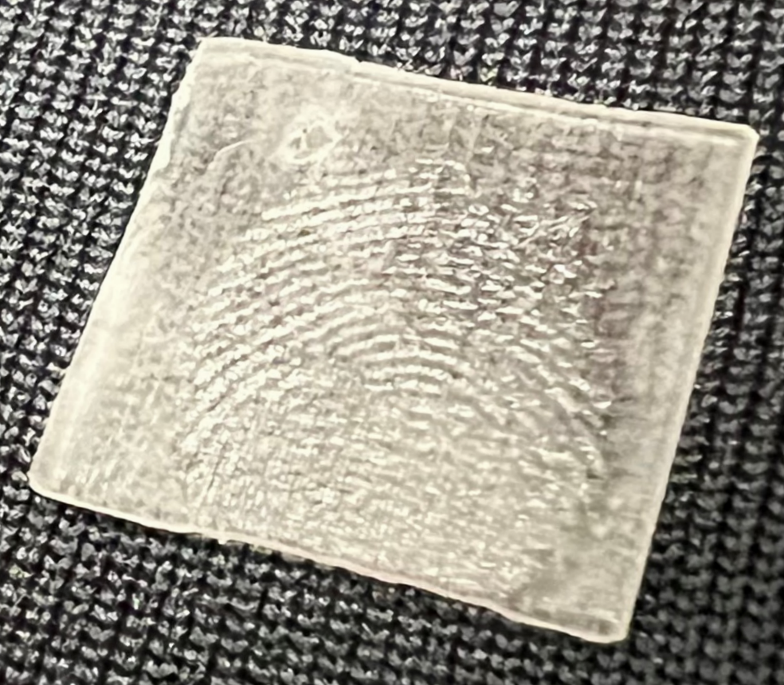

Recently, in-display fingerprint sensors have been widely adopted in newly-released smartphones. However, we find this new technique can leak information about the user’s fingerprints during a screen-unlocking process via the electromagnetic (EM) side channel that can be exploited for fingerprint recovery. We propose FPLogger to demonstrate the feasibility of this novel side-channel attack. Specifically, it leverages the emitted EM emanations whe the user presses the in-display fingerprint sensor to extract fingerprint information, then maps the captured EM signals to fingerprint images and develops 3D fingerprint pieces to spoof and unlock the smartphones.
to be updated...
to be updated...
We take ethical considerations seriously. Since fingerprints are very sensitive biometric information, illegally collecting from human participants may cause severe consequences and violate laws. Therefore, as a proof-of-concept work, we construct 3D fingerprints from real fingerprint images through 3D printing technique.  All fingerprint pieces are built via a 3D printer using fingerprint images from a public dataset for scientific research (SOCOFing), and these pieces are only used for fingerprint registration and unlocking the smartphone to collect EM emanations for empirical evaluations.
Sokoto Coventry Fingerprint Dataset (SOCOFing) is a biometric fingerprint database designed for academic research purposes. SOCOFing contains 6,000 fingerprint images from 600 African subjects and contains unique attributes such as labels for gender, hand and finger name as well as synthetically altered versions with three different levels of alteration for obliteration, central rotation, and z-cut.
Relevant side-channel attacks on different smartphone unlocking systems. FPLogger is the first work to attack in-display fingerprint sensors in newly-released smartphones.